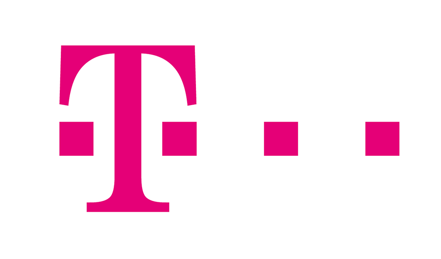
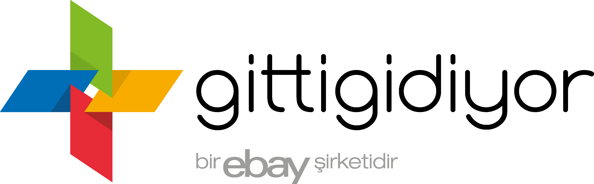

主要顧客

- 

- 
製品レコメンデーション
サイト上のパーソナライゼーション
検索のパーソナライゼーション
SNS のパーソナライゼーション
オンライン広告リターゲティングのパーソナライゼーション
FMCG の B2B 向け次のお買い得
TMT ビデオサービスのパーソナライゼーション
モバイルのパーソナライゼーション
E メールマーケティング
未決済の買い物かごの E メール
店舗内のパーソナライゼーション
パーソナライズしたクーポン発券
買い物客マーケティング
次回のおすすめ製品
日本グラビティ株式会社は複数の東証一部上場企業から高い評価を頂きました。既に複数の名の知れている日系企業様に よって満足して
ご利用いただいています。どちらの場合も自社開発のソリューションと Yusp を比較していただいたところ、Yusp の 結果が圧倒的に自社
ソリューションを上回ったため、Yusp に切り替えることにしました。パーソナライゼーションエンジンの謳い 文句はどれも似ていますが、
実際にテストをすれば実力の差が明かになります。日本グラビティは世界第３位の推奨エンジン企業 として、世界最高レベルのパーソナライ
ゼーションエンジン技術と世界での導入経験を日本市場に提供したいと願っております。
Gravity R&D社CEO,CTO。フンボルト（Humboldt）奨学生。 コンピュータサイエンスのPh.Dを取得（2000年）した後は 研究者、プロジェクトリーダーとして機械学習法と制御問題 に従事。推奨システム、テキストマイニング、データマイニン グなどの国際的なコンテストで幾度も入賞。 Gravity R&D社の設立に加わり、データマイニングチームの リーダーの後 2012年にCEOに就任。
Tóth Gábor氏は2016年10月以来、Gravity R＆Dの最高マー ケティング＆セールス担当者として勤務。Gravity R＆Dの子 会社であるGravityBricks＆Mortarの代表取締役社長とし て、グローバル市場で小売、通信、銀行業界向けにGravity B＆Mの製品を商品化して導入することを目的に、 2016年6月にDeloitte Digitalとのグローバルパートナーシッ プを構築する上で重要な役割を果たした。
1965年東京大学法学部卒業後、通商産業省入省。 日本貿易振興会 企画部長、通商産業研究所研究部長、 富士ゼロックス（株）常務取締役、中小企業診断協会会長等 を歴任後、（財)国際経済交流財団 市場経済化知的交流 グループ 事務局長、ベトナム経済研究所 副理事長、 ミヤンマー経済・投資センター理事長等。
Sudy&Co.社長。ハンガリー外務省にてアジア太平洋局長 (1990-92),、駐タイ大使兼ブルネイ・ラオス・ミャンマー大使 (1992-95)、駐日本大使(1995-1999)を歴任。 1999年に外交官を退官、実業界に転身。ハンガリーと日本 の通称日洪賢人会のメンバー。2009年に日本国から勲二等 旭日重光章を授章。ブダペスト経済大学 博士課程卒業、 モスクワ国際関係大学卒業